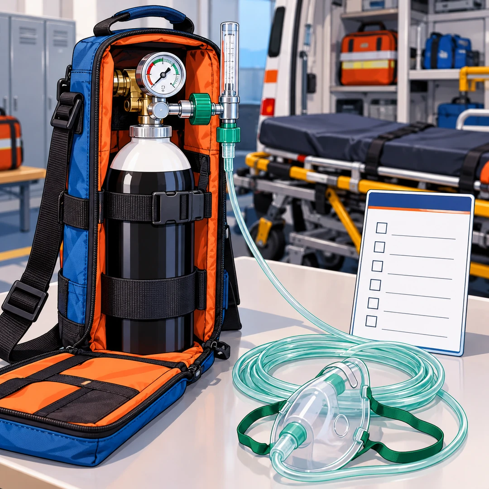

酸素投与に用いる資器材
読む目安：約3分

画像をタップすると拡大できます
私は、酸素投与に用いる資器材。
酸素ボンベ、減圧弁や流量計、接続部、チューブ、酸素マスクなどを組み合わせ、傷病者の状態に応じて酸素を供給するための資器材です。消防庁の応急処置等の基準にも、酸素吸入器による酸素吸入が示されています。必要なときに安全に使える状態を保つ準備は、出動前から始まっています。[2]
残量は、出動前に見る
酸素ボンベの残圧、予備ボンベの有無、バルブや表示の状態を、機種と所属の点検要領に沿って確認します。残量の見方や交換の基準を隊員間でそろえ、点検した日と担当者を記録しておきましょう。[1]
接続部は、一つずつ確かめる
ボンベ、減圧弁、流量計、チューブ、マスクの接続部にゆるみ、傷、汚れ、折れがないかを確認します。接続や開閉の手順は機器ごとに異なるため、取扱説明書と所属の手順に従います。酸素器具を扱うときは、周囲の火気や油脂類の付着にも注意します。[3]
携行方法は、安全と取り出しやすさで決める
ボンベが転倒・落下しないよう固定し、バルブや調整器に衝撃が加わらない方法で携行します。チューブやマスクは折れたり他の資器材に引っ掛かったりしないように収納し、現場で必要なものをすぐ取り出せる配置を隊員間で共有します。[1]
使用後は、残量と補充を戻す
使用後は、ボンベの残量、接続部、チューブ、マスクなどを確認し、所属の手順と製品の指示に従って交換・清掃・補充を行います。次の出動に必要なものを記録し、準備の状態を共有しておきます。
私から、隊へ
残量、接続、携行。酸素は、準備の確かさで支える。
ボンベがあり、接続でき、必要な場所へ安全に運べる。毎日の確認と使った後の補充を重ねて、次の出動に備えておきます。